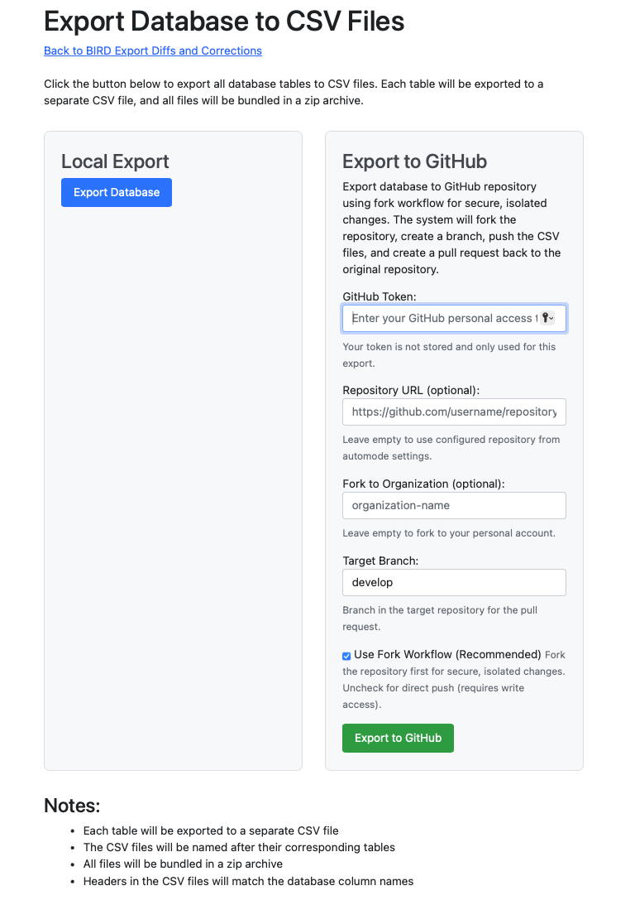

Eclipse Free BIRD Tools provides seamless GitHub integration for creating pull requests with your processed regulatory data and transformations. This guide covers both automated and manual approaches to submit your work for review.
Pull requests in Eclipse Free BIRD Tools allow you to:
Before creating pull requests, ensure you have:
| Requirement | Description |
| System Setup | Database ready and configuration completed |
| GitHub Account | Access to the target repository |
| Personal Access Token | GitHub token with repository permissions |
| Completed Workflow | Finished processing tasks (recommended) |
The recommended approach for creating pull requests after completing your workflow tasks.
The "Create Review" button appears in Quick Actions when:
| Condition | Status |
| Database setup is complete | ✅ Ready |
| Configuration is saved | ✅ Configured |
| Workflow tasks have been executed | Required |
| System is ready for review submission | Ready |
| Step | Action |
| 1. Complete Your Workflow | Finish executing Tasks 1-4 or your desired endpoint |
| 2. Verify System Status | Confirm database and configuration are ready |
| 3. Click "Create Review" | Located in the Quick Actions → Automode Execution section |
| 4. Automatic Processing | System handles fork, branch, and pull request creation |
| Process | Description |
| Repository Fork | Creates a secure fork of the target repository |
| Branch Creation | Generates a new branch for your changes |
| Data Export | Exports processed data and transformations |
| Commit & Push | Commits changes and pushes to your fork |
| Pull Request | Creates a pull request back to the original repository |
For advanced users who need more control over the export process.

| Step | Action |
| 1. Navigate | Export Database to CSV Files |
| 2. Choose | "Export to GitHub" option (right panel) |
| 3. Configure | GitHub settings as needed |
| Setting | Purpose | Details |
| GitHub Token | Required authentication | Personal access token with repository permissions. Token is not stored and only used for this export. Ensure token has fork, push, and pull request creation rights |
| Repository URL (Optional) | Custom repository | https://github.com/username/repository - Leave empty to use repository from automode settings. Specify custom repository if different from configuration |
| Fork to Organization (Optional) | Organizational workflow | organization-name - Leave empty to fork to your personal account. Specify organization name for institutional workflows |
| Target Branch | PR destination | develop - Default: develop branch (recommended). Custom: Specify alternative target branch if required. Purpose: Branch in target repository for the pull request |
Use Fork Workflow checkbox provides:
| Security Benefits | Process Step | Alternative |
| Isolated Changes - Work in your own fork without affecting original repository | Fork Creation - System automatically forks the target repository | Direct Push - Uncheck for direct push (requires write access). Only recommended for trusted contributors. Bypasses fork security layer |
| Permission Control - No direct write access required to main repository | Secure Development - Make changes in your isolated fork | |
| Review Process - Changes must be reviewed before integration | Pull Request - Submit changes back via pull request | |
| Review & Merge - Repository maintainers review and approve changes |
| Step 1: Configure | Step 2: Execute | Step 3: Verify |
| Enter GitHub Token - Your personal access token | Click "Export to GitHub" - Start the export process | Success Message - Confirms successful export and PR creation |
| Specify Repository URL - If different from configuration | System processes configuration - Automated processing | GitHub Link - Direct link to created pull request |
| Set Fork to Organization - If applicable for institutional use | Automated fork and branch creation - System handles repository setup | Review Status - Shows pull request pending review |
| Confirm Target Branch - Default: develop | CSV files generated and uploaded - Data export and upload | |
| Ensure "Use Fork Workflow" - Checked for security | Pull request created automatically - PR creation with summary |
| Component | Description |
| Database Tables | Each table exported to separate CSV file |
| File Structure | CSV files named after corresponding tables |
| Archive Format | All files bundled in zip archive |
| Headers | CSV files include database column names as headers |
| Individual CSV files | Generated for each database table |
| Complete zip archive | Contains all exports |
| Commit message | Descriptive message included |
| Pull request | Created with export summary |
| Security | Workflow Management | Collaboration |
| Always use Fork Workflow for isolated, secure development | Complete workflow tasks first before creating pull requests | Target appropriate branch for your changes |
| Limit GitHub Token permissions to minimum required | Use "Create Review" for routine submissions | Follow repository contribution guidelines |
| Use organizational forks for institutional workflows | Use manual export for specialized requirements | Coordinate with repository maintainers |
| Regular token rotation and access review | Include descriptive commit messages and PR descriptions | Respond promptly to review feedback |
| Authentication Issues | Repository Access | Fork Workflow Problems | Export Failures |
| GitHub token authentication fails | Cannot access target repository | Fork creation fails | Export process fails or times out |
| • Verify token has correct permissions • Check token expiration date • Ensure token is for correct GitHub account | • Verify repository URL is correct • Confirm you have read access • Check if repository is private | • Ensure you don't already have a fork • Verify GitHub account has forking permissions • Check if organization allows forking | • Verify database connectivity and integrity • Check system resources and network connectivity • Retry export with smaller datasets |
| Workflow Integration | Organizational Features | Performance Features |
| Create Review - Integrates with completed workflow tasks | Fork to Organization - Support for institutional development | Multiple Exports - Handle large datasets efficiently |
| Automatic exports - Triggered after successful task completion | Branch Strategies - Flexible branching for different workflow types | Incremental Updates - Support for iterative development workflows |
| Session tracking - Links pull requests to specific workflow executions | Access Control - Integration with organizational GitHub permissions | Automated Reviews - Scheduled and triggered review creation |